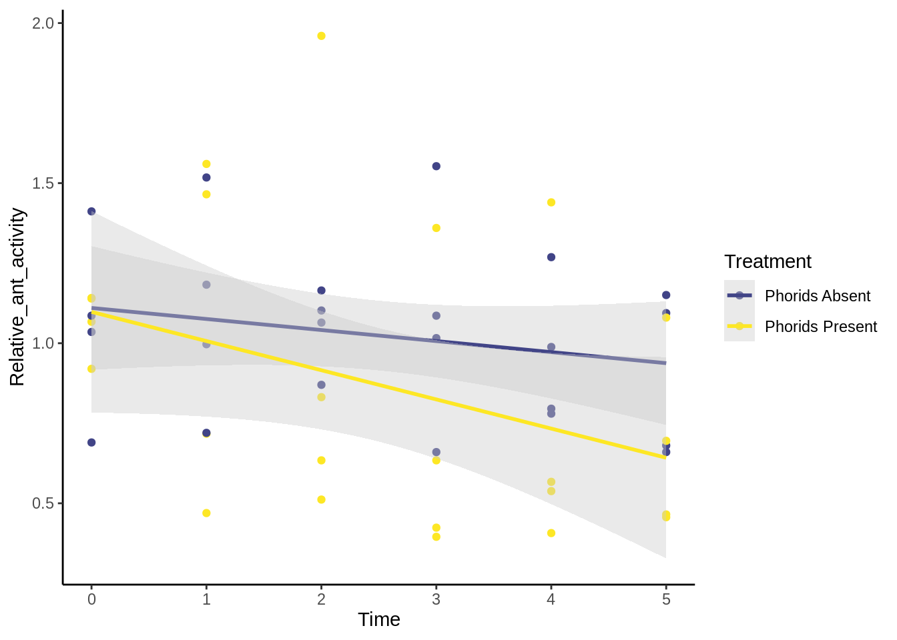

18 Homework: Phorids
18.1 Required Reading
This homework will prepare you to analyze the data from the Phorid lab. You should read over that the material to properly understand the data you’ll be working with here. You will need to be familiar with the chapters 4 5, 6, and 7.3; additionally, you should read 7.3.4).
18.2 Objectives (and what’s due)
How do phorid flies affect the foraging activity of S. invicta?
- Submit: Analysis of Covariance (ANCOVA) examining how phorid presence changes ant foraging over time.
- Submit: Figure supporting this ANCOVA.
How does temperature affect ant foraging behavior, and do phorids affect this relationship?
- Submit: ANCOVA examining how phorid presence affects ant behavior / temperature relationship.
- Submit: Figure supporting this ANCOVA
18.3 Getting started
You should download the dataset phorid_data_f18.csv from Canvas and put it in your data folder
Begin your script with the following:
# Heterogeneity Lab Analysis
#### Setup ####
library(tidyverse)
theme_set(theme_classic()) # Removes gridlines from ggplot
# Data file locations: Change these when analyzing the current dataset
phorid_data <- read_csv("data/phorid_data_f18.csv")Save the R file as R/phorid_homework.R.
18.4 The data
The columns of these data frames that are relevant are:
- Treatment: Control (no phorids) or Experimental (phorids introduced)
- Number_Ants: Number of ants moving across the tile; measure of ant activity
- Team: Team collecting data; when combined with Treatment, this identifies each experimental arena.
- Temp: Temperature (Celsius).
- Time_Step:: Time of observation, separated into baselines and observations
- Time: Time of observation in numeric form; baseline values are negative; each increase of one is a five-minute interval.
18.5 Standardizing ant counts
Since each bait attracts ants to a different degree, we want to standardize the ant counts to account for this. One way to do so is by calculating the mean number of ants at each for each experimental arena during the baseline period, then dividing the number of ants at other periods by this number.
baseline_means = phorid_data |>
# Only include rows with "Baseline" in timestep
filter(str_detect(Time_Step, "Baseline")) |>
# group by arena
group_by(Treatment, Team) |>
# Calculate means
summarize(baseline_mean = mean(Number_Ants))
baseline_means
## # A tibble: 8 × 3
## # Groups: Treatment [2]
## Treatment Team baseline_mean
## <chr> <chr> <dbl>
## 1 Control A 33.3
## 2 Control B 28.3
## 3 Control C 104.
## 4 Control D 93
## 5 Experimental A 25
## 6 Experimental B 61.3
## 7 Experimental C 164
## 8 Experimental D 86Now, we want to combine this mean with the observation period data. We’ll use a join function for this, which is a useful way to combine datasets by value (instead of by row or column). We’ll also do the standardization and change the treatment column to be more descriptive.
standardized_data = phorid_data |>
filter(Time >= 0) |> # Let's remove the first two baselines
# Combine w/ baseline_means, matching up the Treatment & Team columns
left_join(baseline_means, by = c("Treatment", "Team")) |> # This adds the baseline_mean column
# Standardize the data
mutate(Relative_ant_activity = Number_Ants / baseline_mean,
# Re-code the Treatment column to make it more self-explanatory in the figure legend
Treatment = recode(Treatment, Control = "Phorids Absent", Experimental = "Phorids Present"))18.6 Run ANCOVAS
You’ll be running two ANCOVAs on these data; For the first, you’ll be testing the effects of phorids on the change in relative ant activity over time. For the second, you’ll be testing how phorids and relative temperature affect the number of ants. Follow the guide in the Section 7.3.4 on ANCOVAs.
For each ANCOVA, include a figure (example below), the regression line/lines (depending on whether there is a significant interaction), the \(R^2\), and the p-values of the main and interaction coefficients. You should also include biological interpretations.
